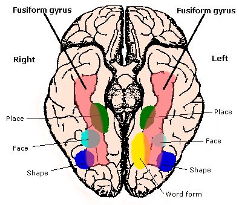

방추형얼굴영역 (Fusiform Face Area)
검수 완료

| # | 원문 | 한국어 |
|---|---|---|
| 1 | Fusiform gyrus | 방추이랑 |
| 2 | Right | 오른쪽(반구) |
| 3 | Left | 왼쪽(반구) |
| 4 | Place | 장소 |
| 5 | Face | 얼굴 |
| 6 | Shape | 모양 |
| 7 | Word form | 글자 형태 |
쉽게 풀면
길에서 스쳐 지나가는 수백 명 중에서도 아는 사람의 얼굴은 순식간에 알아볼 수 있다. 이렇게 우리가 얼굴을 '특별 취급'하는 데는 이유가 있는데, 뇌 안에 얼굴 처리만 전담하다시피 하는 영역이 따로 있기 때문이다. 바로 방추형얼굴영역(FFA)으로, 시각피질보다 더 안쪽, 측두엽 아래쪽의 방추이랑(fusiform gyrus)이라는 곳에 자리한다. 이 영역은 사람 얼굴 사진을 볼 때 집이나 도구, 풍경 사진을 볼 때보다 훨씬 활발하게 반응한다. 마치 사무실에 '얼굴 인식 전담 부서'가 따로 있어서, 다른 부서보다 얼굴 관련 업무가 들어오면 유독 바빠지는 것과 비슷하다. 이 영역이 손상되면 얼굴은 보이지만 누구인지 알아보지 못하는 '얼굴맹(prosopagnosia)' 증상이 나타나기도 한다.
왜 중요한가
방추형얼굴영역은 뇌가 특정 범주의 자극을 전담 처리하는 영역을 따로 갖는지, 즉 기능적 국재화(functional localization)가 실제로 존재하는지를 보여주는 대표적인 사례로 여겨져 인지신경과학 전반에서 중요하게 다뤄진다. 자폐스펙트럼장애나 얼굴맹처럼 사회적 인지에 어려움을 겪는 임상군에서 FFA의 활성이나 연결성이 어떻게 달라지는지를 비교하는 연구도 많아, 임상 신경과학과도 밀접하게 연결된다. 또한 시각 처리가 얼마나 영역-특이적으로 조직되는지를 둘러싼 이론적 논쟁의 중심에 있어, 뇌 기능 구조에 관한 철학적·이론적 논의에서도 자주 인용된다.
어디에 있고 어떻게 생겼나
- 방추이랑 얼굴 영역(FFA)은 하측두피질의 방추이랑(브로드만 37영역)에 있다. 측두엽 아랫면이며 보통 오른쪽 반구가 더 크다.
- 1992년 저스틴 서전트가 PET으로 사람의 FFA를 처음 기술했고, 낸시 캔위셔가 1997년에 이름을 붙이면서 시각계의 영역 특수성을 뒷받침한다고 주장했다.
- 얼굴 사진에 대한 반응이 대부분의 다른 범주보다 크다. fMRI와 피질 뇌파 연구에서 FFA 활동은 개별 얼굴을 부호화하며, 낯선 얼굴보다 익숙한 얼굴에서 더 강하다.
맡은 기능
- 논쟁이 있다. 캔위셔 등은 FFA가 얼굴 처리에 전용이라고 본다. 이자벨 고티에가 이끄는 전문성 가설은 FFA가 시각적으로 비슷한 대상을 구별하는 망의 일부라고 본다. 자동차·새 전문가에서 자기 분야 대상을 식별할 때 FFA가 활성화되었고, 체스와 X선 영상에서도 전문성 효과가 보고되었다.
- 새로운 자극인 "그리블"을 쓴 연구에서 참가자가 전문가가 되면서 그리블에 대한 FFA 반응이 얼굴에 대한 반응 수준까지 올랐다.
- 2009년 MEG 연구에서 얼굴처럼 지각되는 대상(변상증)은 약 165 ms에 얼굴과 비슷한 초기 반응을 일으켰다.
- 얼굴 선택성이 있는 영역을 전기로 자극하면 얼굴 지각이 왜곡된다. 2020년에는 선천적으로 눈이 먼 사람이 3차원 얼굴 모형을 만졌을 때도 이 영역이 활성화되었다.
연구에서 다루는 방식
- 얼굴인식장애(안면실인증)는 익숙한 얼굴을 알아보기 어렵지만 사물 인식과 지능은 유지되는 상태이다. 정상에서는 방추이랑이 얼굴에 특이적으로 반응하고, 장애에서는 덜 민감한 사물 인식계에 더 의존한다. 오른쪽 방추이랑이 익숙한 얼굴 인식에 더 자주 관여한다.
- 발달성(선천성) 얼굴인식장애는 약 2~2.5 %의 사람에게 있고 오른쪽 방추이랑이 덜 발달했으며 가족 내 발생이 흔하다. 후천성은 후두-측두 영역 손상으로 생기며 뇌졸중, 출혈, 퇴행성 질환, 일산화탄소 중독, 뇌염, 종양 등이 원인이다.
- 이 연구들은 FFA가 개별 얼굴 인식에 필수적임을 시사한다. 환자는 목소리 같은 다른 단서로 사람을 식별할 수 있다.
- 논문에서는 FFA를 개인별로 찾는 방법(얼굴 대 사물 대비의 국재화 과제)과 어느 반구를 분석했는지, 영역 특수성과 전문성 중 어느 해석을 택하는지를 적는다.
논문에서는 이렇게 쓰입니다
실제 논문에서
국내 학술지 논문에서 이 용어가 쓰인 문장을 그대로 옮겼다. 제목·학술지·연도와 원문 링크를 함께 적었다.
“둘째, 앞쪽측두엽(Frontotemporal)의 기억 보상은 노인층 방추회(fusiform face area)의 얼굴 인식 결함을 보완한다.”
노령층에서 선호되는 이모지의 시각 특성에 관한 신경과학적 연구, 한국디자인문화학회지, 2022 · KCI 한국학술지인용색인 · 원문 보기 ↗
예시 문장
아래 예문은 용어의 쓰임을 보이려고 만든 것으로, 실제 논문 문장이 아니다.
이 문장은 fMRI 실험에서 참가자에게 얼굴 사진과 집 사진을 각각 보여줬을 때, 방추형얼굴영역이 얼굴 사진에서만 특별히 더 강한 혈류 반응을 보였다는 뜻이다.
얼굴을 잘 알아보지 못하는 환자들은 이 뇌 영역이 얼굴을 봤을 때 정상인만큼 활발히 반응하지 않았다는 뜻이다.
자동차에 능숙한 사람들은 차 모델을 구분할 때 얼굴 처리와 관련된 뇌 영역 근처가 일반인보다 더 활발히 반응했다는 뜻이다.
조금 더 깊게 보면
FFA 연구에서는 흔히 얼굴 대 사물(faces vs. objects) 대비를 이용한 국재화 과제(localizer task)로 개인별 FFA 위치를 먼저 특정한 뒤, 그 관심영역(ROI) 안에서 실험 조건 간 반응을 비교하는 방식이 표준적으로 쓰인다. 인접한 영역인 후두얼굴영역(occipital face area)이나 상측두구(superior temporal sulcus)와 기능이 어떻게 나뉘는지도 함께 다뤄지며, 최근에는 다중복셀패턴분석(MVPA)을 활용해 단순한 활성 크기가 아니라 활성 패턴 자체가 얼굴 정체성을 구분하는지를 보는 연구도 늘고 있다.
주의할 점
FFA가 '얼굴만' 처리한다고 단순화하기 쉽지만, 실제로는 매우 익숙하거나 전문적으로 구별해야 하는 대상(예: 조류 전문가가 보는 새 종류, 자동차 마니아가 보는 차종)에도 일부 반응한다는 연구들이 있다. 즉 얼굴 전용이라기보다는 '세밀한 시각적 구별이 필요한 전문 지각'에 관여한다는 해석도 있어, 단순한 얼굴 전담 영역으로만 보는 것은 주의가 필요하다.
참고 문헌
- Wikipedia contributors. (n.d.). Fusiform face area. Wikipedia.
- Wikipedia contributors. (n.d.). Prosopagnosia. Wikipedia.